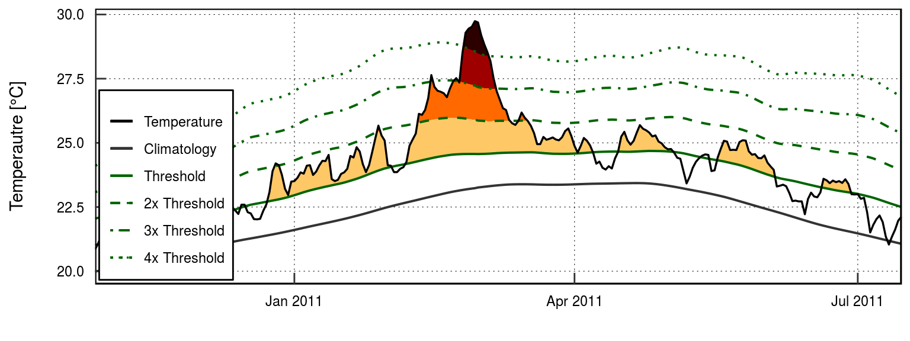
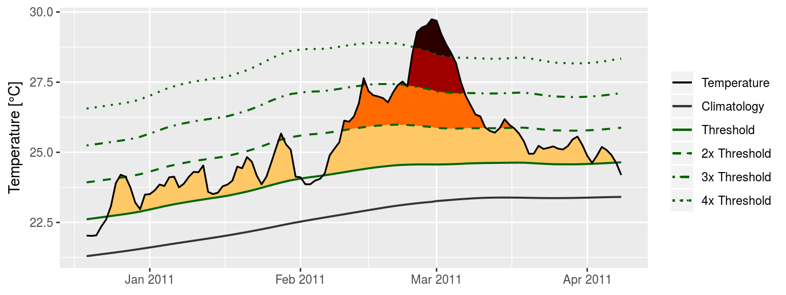

vignettes/event_categories.Rmd
event_categories.RmdThe classification of MHWs under the naming scheme first proposed by Hobday et al. (2018) may also be calculated and visualised with the heatwaveR package using the category() function on the output of the detect_event() function. Note that one may control the output for the names of the events by providing ones own character string for the name argument. Because we have calculated MHWs on the Western Australia data, we provide the name “WA” below.
# Load libraries
library(heatwaveR)
library(dplyr)
# Calculate events
ts <- ts2clm(sst_WA, climatologyPeriod = c("1983-01-01", "2012-12-31"))
mhw <- detect_event(ts)
# Look at the top few events
tail(category(mhw, S = TRUE, name = "WA"))## # A tibble: 6 x 11
## event_no event_name peak_date category i_max duration p_moderate
## <dbl> <fct> <date> <chr> <dbl> <dbl> <dbl>
## 1 38 WA 2010 2010-09-29 II Stro… 2.58 18 78
## 2 40 WA 2010 2010-12-02 II Stro… 2.66 15 73
## 3 31 WA 2008 2008-04-14 III Sev… 3.77 34 62
## 4 22 WA 1999 1999-05-22 II Stro… 3.6 95 59
## 5 58 WA 2014 2014-08-31 II Stro… 2.2 12 58
## 6 42 WA 2011 2011-02-28 IV Extr… 6.51 60 47
## # ... with 4 more variables: p_strong <dbl>, p_severe <dbl>,
## # p_extreme <dbl>, season <chr>Note that this functions expects the data to have been collected in the southern hemisphere, hence the argument S = TRUE. If they were not, one must set S = FALSE as seen in the example below. This ensures that the correct seasons are attributed to the event.
res_Med <- detect_event(ts2clm(sst_Med, climatologyPeriod = c("1983-01-01", "2012-12-31")))
tail(category(res_Med, S = FALSE, name = "Med"))## # A tibble: 6 x 11
## event_no event_name peak_date category i_max duration p_moderate
## <dbl> <fct> <date> <chr> <dbl> <dbl> <dbl>
## 1 55 Med 2011 2011-05-25 II Stro… 4.05 8 62
## 2 23 Med 1999 1999-04-06 II Stro… 1.88 5 60
## 3 28 Med 2003 2003-06-20 II Stro… 5.02 30 57
## 4 62 Med 2012 2012-08-20 II Stro… 4.22 18 56
## 5 44 Med 2007 2007-04-25 III Sev… 4.02 19 42
## 6 70 Med 2014 2014-10-18 II Stro… 3.31 110 35
## # ... with 4 more variables: p_strong <dbl>, p_severe <dbl>,
## # p_extreme <dbl>, season <chr>A quick and easy visualisation of the categories of a MHW may be accomplished with event_line() by setting the category argument to TRUE.
event_line(mhw, spread = 100, start_date = "2010-11-01", end_date = "2011-06-30", category = TRUE)
Were one to want to visualise the categories of a MHW ‘by hand’, the following code will provide a good starting point.
# Create category breaks and select slice of data.frame
clim_cat <- mhw$clim %>%
dplyr::mutate(diff = thresh - seas,
thresh_2x = thresh + diff,
thresh_3x = thresh_2x + diff,
thresh_4x = thresh_3x + diff) %>%
dplyr::slice(10580:10690)
# Set line colours
lineColCat <- c(
"Temperature" = "black",
"Climatology" = "gray20",
"Threshold" = "darkgreen",
"2x Threshold" = "darkgreen",
"3x Threshold" = "darkgreen",
"4x Threshold" = "darkgreen"
)
# Set category fill colours
fillColCat <- c(
"Moderate" = "#ffc866",
"Strong" = "#ff6900",
"Severe" = "#9e0000",
"Extreme" = "#2d0000"
)
ggplot(data = clim_cat, aes(x = t, y = temp)) +
geom_flame(aes(y2 = thresh, fill = "Moderate")) +
geom_flame(aes(y2 = thresh_2x, fill = "Strong")) +
geom_flame(aes(y2 = thresh_3x, fill = "Severe")) +
geom_flame(aes(y2 = thresh_4x, fill = "Extreme")) +
geom_line(aes(y = thresh_2x, col = "2x Threshold"), size = 0.7, linetype = "dashed") +
geom_line(aes(y = thresh_3x, col = "3x Threshold"), size = 0.7, linetype = "dotdash") +
geom_line(aes(y = thresh_4x, col = "4x Threshold"), size = 0.7, linetype = "dotted") +
geom_line(aes(y = seas, col = "Climatology"), size = 0.7) +
geom_line(aes(y = thresh, col = "Threshold"), size = 0.7) +
geom_line(aes(y = temp, col = "Temperature"), size = 0.6) +
scale_colour_manual(name = NULL, values = lineColCat,
breaks = c("Temperature", "Climatology", "Threshold",
"2x Threshold", "3x Threshold", "4x Threshold")) +
scale_fill_manual(name = NULL, values = fillColCat, guide = FALSE) +
scale_x_date(date_labels = "%b %Y") +
guides(colour = guide_legend(override.aes = list(linetype = c("solid", "solid", "solid",
"dashed", "dotdash", "dotted")))) +
labs(y = expression(paste("Temperature [", degree, "C]")), x = NULL)
Presently the functionality for the detection of categories for MCSs has not been introduced into heatwaveR, but it is inbound.